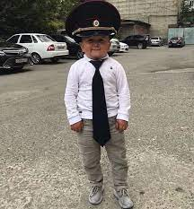
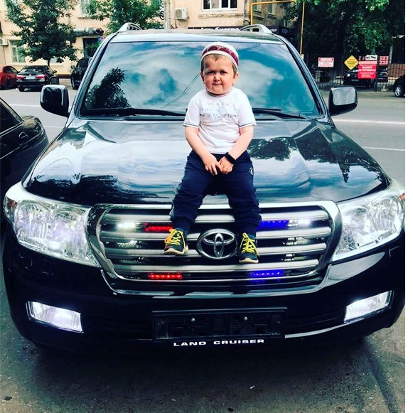
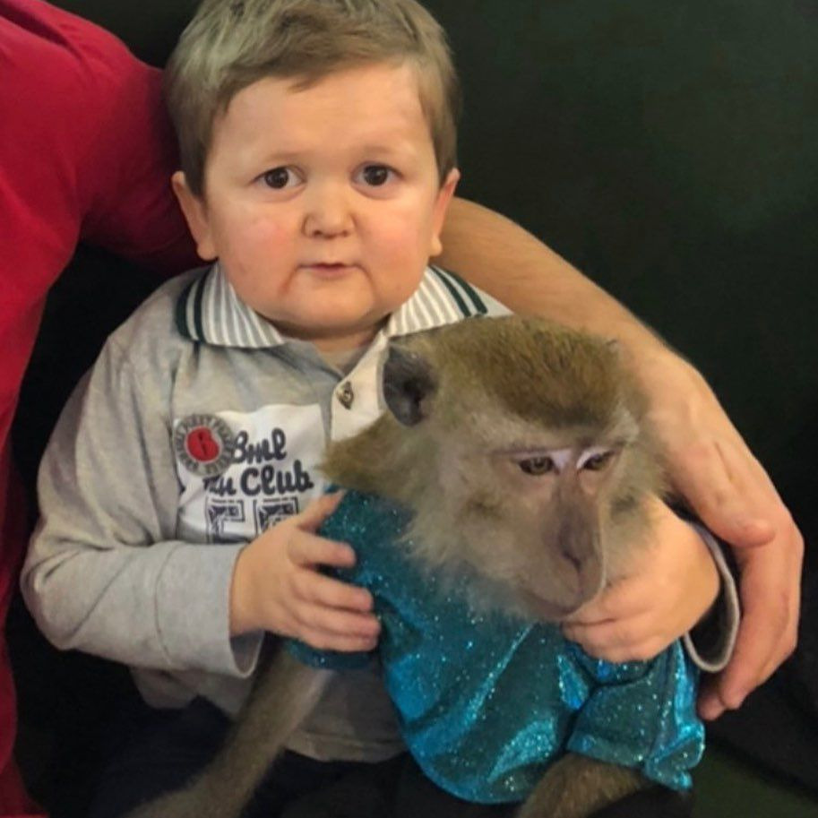
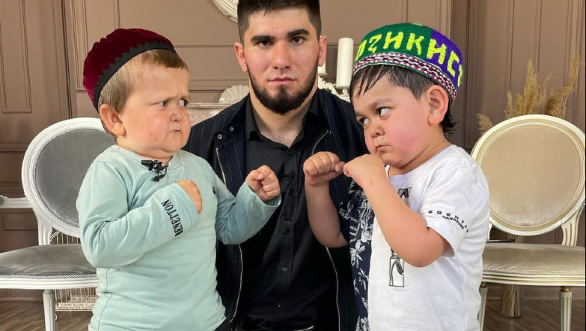

Обезья́ны, или «сухоносые» приматы, — подотряд млекопитающих из отряда приматов. Обезьяны отличаются по ряду признаков от другого подотряда приматов — полуобезьян. У гаплориновых приматов сухой нос и менее развитое чувство обоняния. Среди обезьян преобладают виды, рождающие одного детёныша.

моя тактика ведения боя включает в себя набор приемов для выигрывания отдельной битвы (боя), в то время как стратегия — для победы в войне в целом. Тактика охватывает изучение, разработку, подготовку и ведение всех видов боевых действий: наступления, обороны, встречного боя, тактических перегруппировок и так далее.